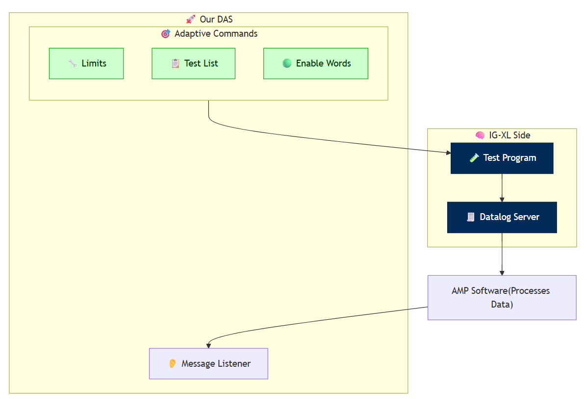
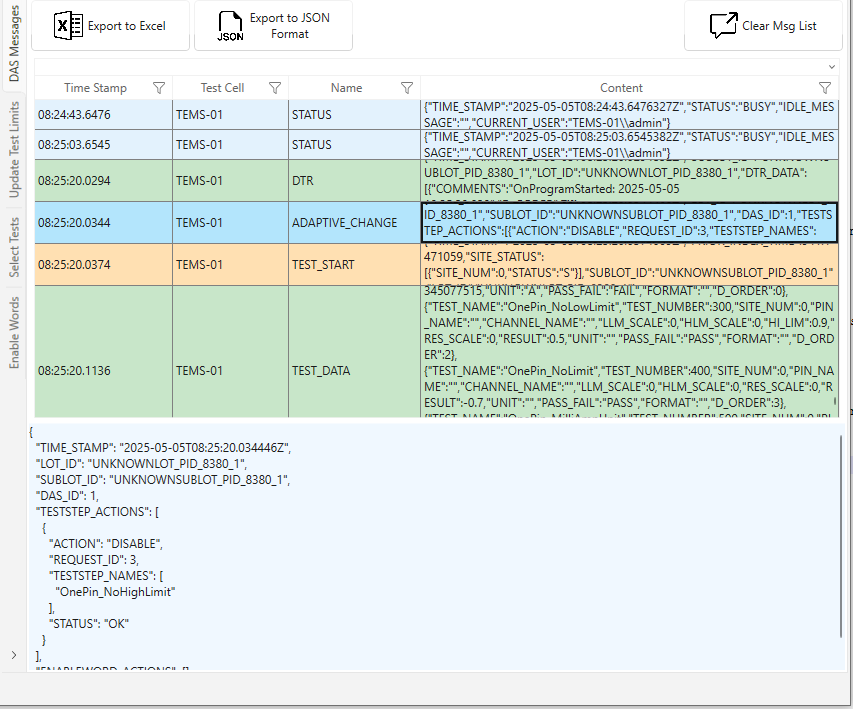
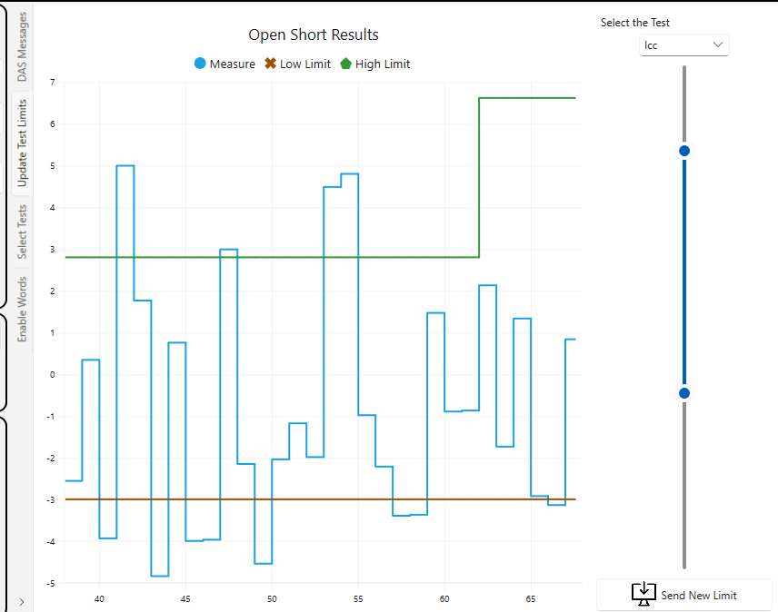
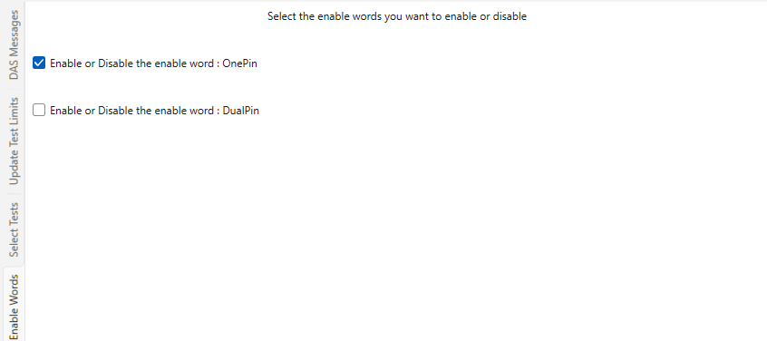
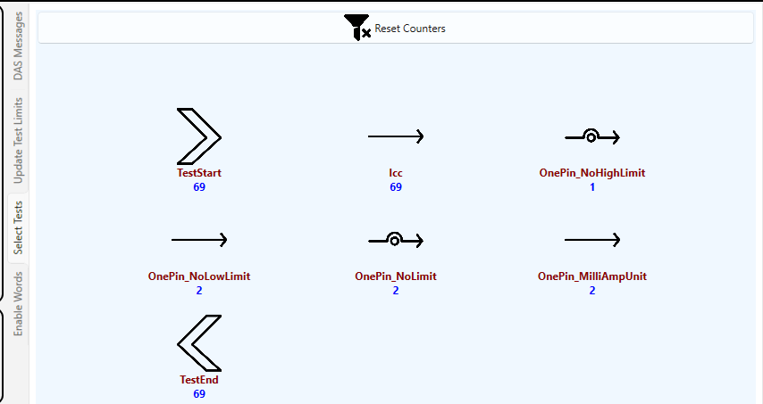

Accelerate Test Execution with Adaptive Test
Reference: RA_453
Unlock Smarter Testing with DAS
Welcome to the Adaptive Test DAS Demo — a powerful illustration of how test programs can be made smarter, more flexible, and responsive to real-time conditions. Whether you're running it locally or envisioning a scaled deployment on remote servers, this demo is built to showcase adaptability.
What This Demo Demonstrates
This demo highlights three key capabilities of our Data Analytics Solution (DAS):
- Enabling or disabling specific tests — streamline test execution based on context or priorities
- Modifying test limits dynamically — improve accuracy and adapt to production variability
- Controlling enable words — activate or deactivate sub-flows conditionally
Additionally, the system offers robust observability:
- Monitor messages sent by the tester in real time
- Understand communication patterns driven by adaptive logic
Software Overview

Explore the Demo Software
The demo application includes four dedicated sections:
DAS Section
View all messages generated by the tester. Clicking on a message reveals its detailed contents.

Test Limits Section
Displays the test results for Icc and its associated limits. Use the slider and Update Test Limits button to adjust the thresholds.

Enable Word Section
The test program includes two enable words that control sub-flow activation. Enable or disable them directly from this interface.

Test Enable/Disable Section
Enable or disable tests dynamically with a simple click in the interface.

Technical Snapshot
| Component | Version |
|---|---|
| Language | C# |
| Framework | .NET 8 |
| Environment | Windows 10 |
| Excel | 2016 (64-bit) |
| IGXL | 10.60.02 |
Extend the Demo to Your Environment
To implement a similar system, we recommend reviewing the following guides:
| Reference Architecture | Description |
|---|---|
| RA_0468 | How to implement a DAS in C# |
| RA_0478 | How to send an adaptive command in C# |
See It in Action
Explore the complete Instructions to Run the Demo or browse the image gallery to discover key functionalities.
Looking to integrate this approach into your test strategy? Contact our team to explore how DAS can support your roadmap.
This demo is part of our Reference Architecture Series – built to inspire smarter test development.